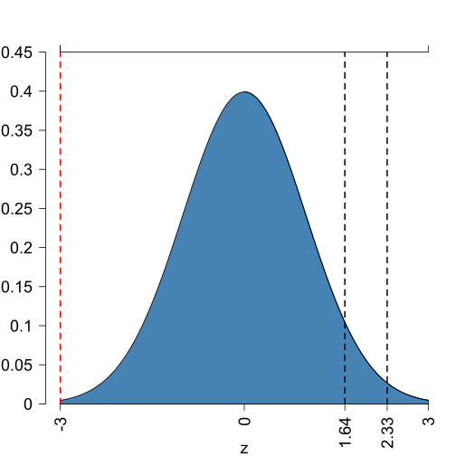
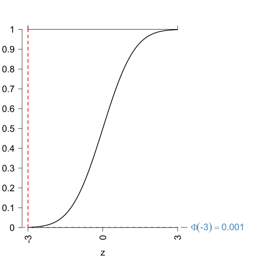
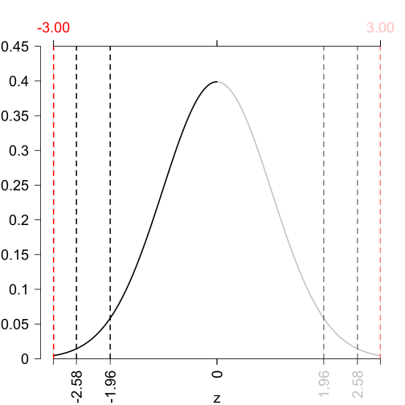
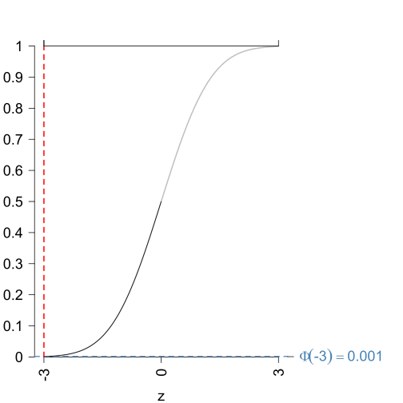
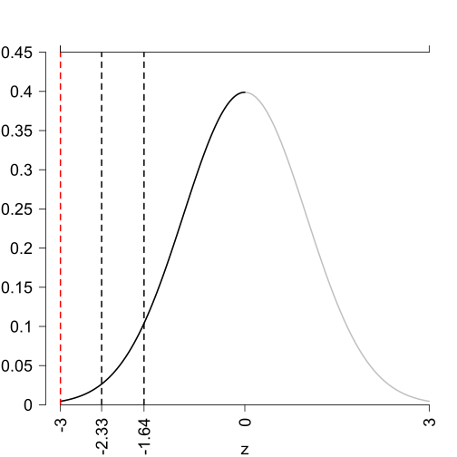

Illustration of Hypothesis Test
Simple t-test
Topic of the module
Understand the differences between one and two-sided hypothesis test.
See the effect of the test statistic on the decision and the PDF of the test statistic.
Steps to Hypothesis Testing
Typically, \(\alpha\) = 5 % is used if not stated otherwise.
where \(\mu_0\) is the population mean and \(\theta\) the sample mean.
In the Illustration section below the plots, the computation of the p-values is shown.
Compare the p-value with the significance level choosen in step 2. When the p-value is smaller than the significance level \(\alpha\), reject the \(H_0\) hypothesis and conclude \(H_1\). If it is greater than the significance level do not reject \(H_0\).
Illustration
Change the type of the test and the value of the test-statistic.
Test Statistic \(t^{act}\)
| Probability Density Function (PDF) | Probability Density Function (PDF) |
|  |  |
| Probability Density Function (PDF) | Probability Density Function (PDF) |
|  |  |
| Probability Density Function (PDF) | Probability Density Function (PDF) |
|  |
|
|
This module is part of the DeLLFi project of the University of Hohenheim and funded by the 
|
|